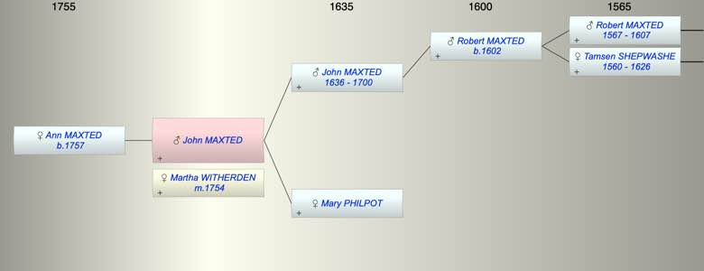

| [Index] |
| John MAXTED |
|  |
| m. 30 Jul 1754 Martha WITHERDEN at St Lawrence |
| Parents: |
| John MAXTED (1636 - 1700) |
| Mary PHILPOT |
| Siblings (2): |
| Thomasin MAXTED |
| Robert MAXTED (1663 - 1740) |
| Children (1): |
| Ann Moses MAXTED (1757 - ) |
| Events in John MAXTED's life | |||||
| Date | Age | Event | Place | Notes | Src |
| 1700 | Death of father John MAXTED (aged 64) | Note 1 | |||
| 30 Jul 1754 | Married Martha WITHERDEN | St Lawrence | Note 2 | ||
| 1757 | Birth of daughter Ann Moses MAXTED | Northbourne | Note 3 | ||
| Note 1: died 29 Apr 1700 aged 63 ex Cotton MI |
| Note 2: both single by licence ex FMP PR |
| Note 3: bap 12 Mar 1757 Northbourne dau of John and Martha ex FS |
| Personal Notes: |
| who is the John Maxted who married Thomasine Harnett botp at St Lawrence 17 May 1756 |
| Created on a Mac™ using iFamily for Mac™ on 8 Oct 2023 |